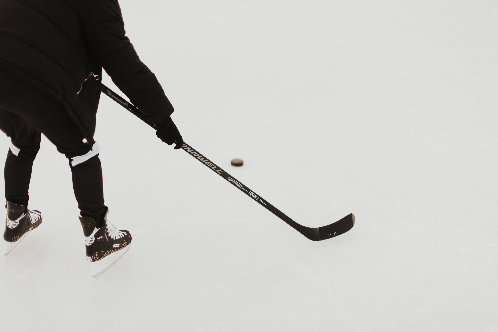

Hockey.
By - Adesh Bandal.

Hockey is a term used to denote various types of both summer and winter team sports which originated on either an outdoor field, sheet of ice, or dry floor such as in a gymnasium.
There are many types of hockey. Some games make the use of skates, either wheeled, or bladed while others do not. In order to help make the distinction between these various games, the word "hockey" is often preceded by another word i.e. "field hockey", "ice hockey", "roller hockey", "rink hockey", or "floor hockey".
In each of these sports, two teams play against each other by trying to manoeuvre the object of play, either a type of ball or a disk (such as a puck), into the opponent's goal using a hockey stick. Two notable exceptions use a straight stick and an open disk (still referred to as a "puck") with a hole in the center instead. The first case is a style of floor hockey whose rules were codified in 1936 during the Great Depression by Canada's Sam Jacks. The second case involves a variant which was later modified in roughly the 1970s to make a related game that would be considered suitable for inclusion as a team sport in the newly emerging Special Olympics. The floor game of gym ringette, though related to floor hockey, is not a true variant due to the fact that it was designed in the 1990s and modelled off of the Canadian ice skating team sport of ringette, which was invented in Canada in 1963. Ringette was also invented by Sam Jacks, the same Canadian who codified the rules for the open disk style of floor hockey 1936.
History
Games played with curved sticks and a ball can be found in the histories of many cultures. In Egypt, 4000-year-old carvings feature teams with sticks and a projectile, hurling dates to before 1272 BC in Ireland, and there is a depiction from approximately 600 BC in Ancient Greece, where the game may have been called because it was played with a horn or horn-like stick In Inner Mongolia, the Daur people have been playing beikou, a game similar to modern field hockey, for about 1,000 years.